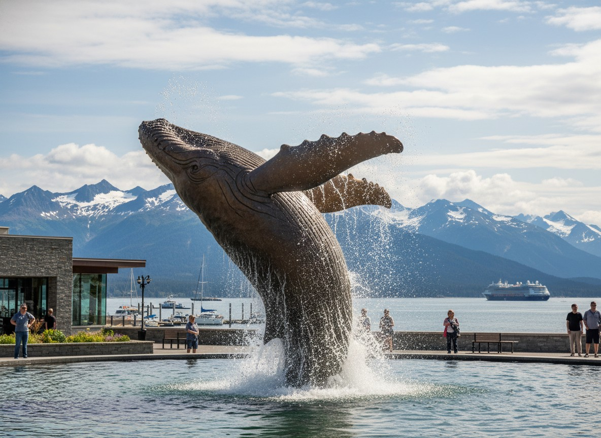

1
Tahku (The Whale Project)

Your journey begins at a stunning life-sized bronze sculpture of a breaching humpback whale rising from an infinity pool. It perfectly captures the scale of the wildlife you hope to see during your Alaska adventure.
The sculpture commemorates the 50th anniversary of Alaska statehood. Stand here on the Seawalk and take in your first views of Gastineau Channel, the waterway that brought gold seekers to these shores over a century ago.
Wildlife Spotting
Look up at the light poles. Bald eagles often perch here, surveying the channel for fish. Scan the water for harbor seals bobbing near the docks.
Photo Op
Stand near the blowhole of the sculpture. It occasionally sprays water simulating a whale spout, making for a fun action photo with the mountains behind.